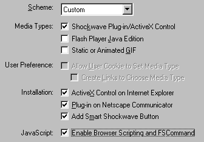

Using Aftershock Utility


Making your finished Flash movie Web-ready, can be tricky. Macromedia has built Aftershock to take care of this problem. Aftershock, can write the HTML codes needed to show your Flash movie on the web, including javascripts and more to make the experience even better.
Getting Aftershock: Aftershock is supplied with Macromedia Flash 3, so you probably have it already. If not, then download it at http://www.flash.com/.
Making an .swf file Web-ready: Open Aftershock. Click the following button:
Editing an already Aftershocked movie: Click the following button, and locate the HTML file which you created earlier using Aftershock.
There are many Aftershock tabs. Let's go over them one by one. Scripting, Page Layout, Shockwave, Alternate Image, and Java.
Scripting: The scripting tab specifies which audience and under which circumstances the movie is shown. Select the Scheme. Note: Java works only for Flash 2 movies, and GIF files are hardly an option for a Flash movie. I usually use these parameters:

This is a good option if you use Flash 3, with javascripts like opening a new browser window.
Page Layout: Specifies how your Flash movie should look in the users browser. This is where much of the magic happens. If you need to scale the movie to a larger size than the one you specified in Flash, this is where you do it. If you wan't to make a fullscreen presentation, select 100%. Examine my Making Fullscreen movies topic also. Alignment specifies which part of your movie should stay anchored. If you specify another size than the one you originally specified in Flash, the browser will resize the movie, so that things supposed to be hidden will be shown. Using Align, you can anchor one of your "walls", so that at least that side won't become visible. List URL's and List Text are for Search Engine registration.
Shockwave: Here,
you specify how your movie will behave in the browser. You can actually change
the background color of your movie, simply by writing the hexcode here!
The playback part specifies if you wan't the movie to be paused when first loading,
and if you wan't the movie to loop. When the "display menu" is checked,
you will have the comlete list when you right click a move (including zoom,
rewind etc.). When unchecked, you'll only recieve the "About Shockwave
Flash" message. Device font is a mysterious option which (i think) utilizes
a font already on the users system. (Don't know why you'd use this option, as
the Flash Font feature is great).
The quality, is essentil if you want your movie anti-aliased (smoothed). Auto-High
turns the smooth feature on or off increasing the speed of playback. I usually
use High quality.
The window mode has three options. You usually use "window". Opague
is useful for DHTML users. Transparent makes the background transparent, allowing
a background image to show through. NOTE: Transparent feature works only on
Internet Explorer 4.
Scale is if you have specified another size of your movie. Exact fit, skews
the movie to fill your demands. No border, removes the borders your movie has
in Flash. In other words, you'll be able to see elements, that you could only
see in Flash when "Work Area" is checked. This may even crop your
movie. Default, is like "No border", only it doesn't crop your movie.
Use align, to specify which side of your movie, which you don't want the Flash
player to crop.
Alternate Image: If you wan't to create an animated gif (or static), this is where you should go. It's more advanced than the same feature of Flash. The controls are pretty much straightforward.
Java: If it's a Flash 2 movie you're exporting, and you want to use the Flash Java Player, this is where you specify the settings. You also specify where your movie can find the Java Player.
And that's pretty much how you use Aftershock.